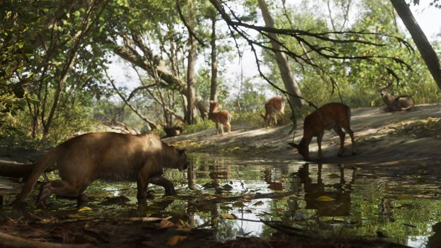

BLIP GUIDES
Сводка
Слухи
Разбор кадра
Игроки
GTA 5 vs 6
Мифы
Инструменты
Справочник
☰
// Справочник
Карта
Штат Леонида, Вайс-Сити и все официальные регионы GTA 6.
Статьи (4)
Карта GTA 6: штат Леонида и все регионы
Обновлено 24.09.2026
Вайс-Сити в GTA 6: главный город Леониды
Обновлено 24.09.2026
Размер карты GTA 6 по сравнению с GTA 5
Обновлено 24.09.2026

Животные в GTA 6: кто живёт в Леониде
Обновлено 26.09.2026